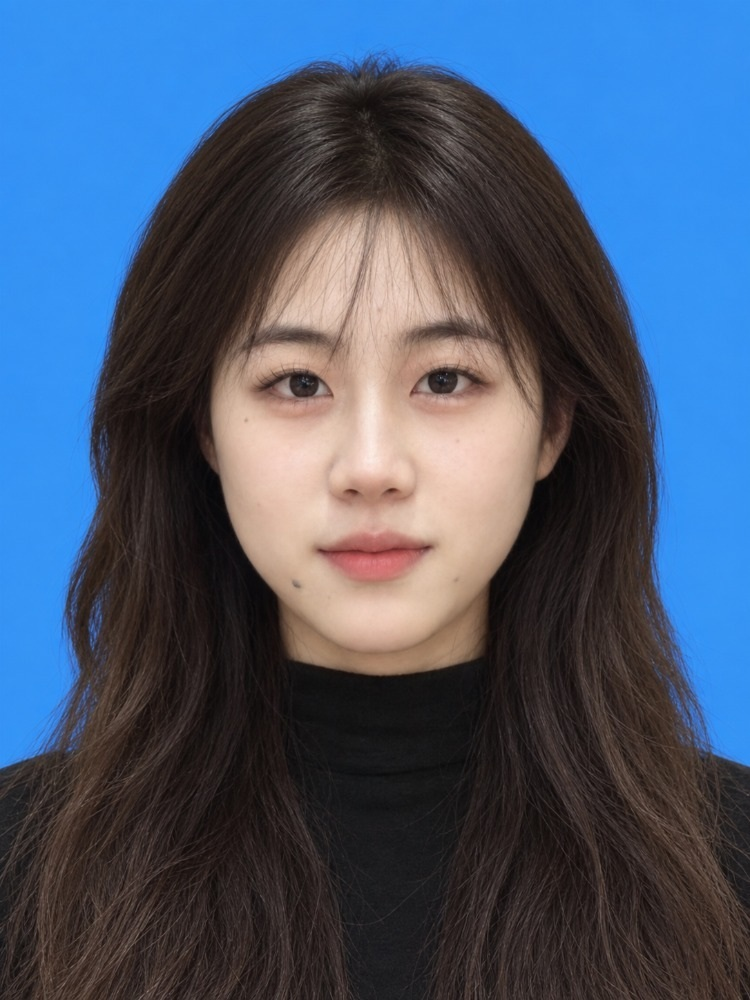

西安电子科技大学
英语笔译 · 硕士（2027 届）

很高兴在这里遇见你
英语笔译硕士在读，2027 届。
做过英语教学、海外招聘与英汉翻译。
从这里开始了解我
点击下面的入口，直接跳到你想了解的部分。
01 / 教育背景
英语笔译 · 硕士（2027 届）
主修课程：科技英语翻译、术语翻译、笔译技巧与实践、计算机辅助翻译等。
商务英语 · 本科
主修课程：商务英语口语、商务英语写作、商务英语视听说、国际贸易等。
03 / 证书技能
高中英语教师资格证
TEM-8（79） · CET-6（623）
IELTS 7.5（口语 7.5）
Codex（试卷与分层练习初稿生成）
XMind（思维导图 / 知识结构化）
Word（试卷排版与教案编写）
Excel（数据统计） · PowerPoint（课件制作）
02 / 工作经历
海外 HR 实习生（墨西哥方向）
英语主讲教师
教研助理（雅思方向）
外贸翻译实习生
04 / 联系方式